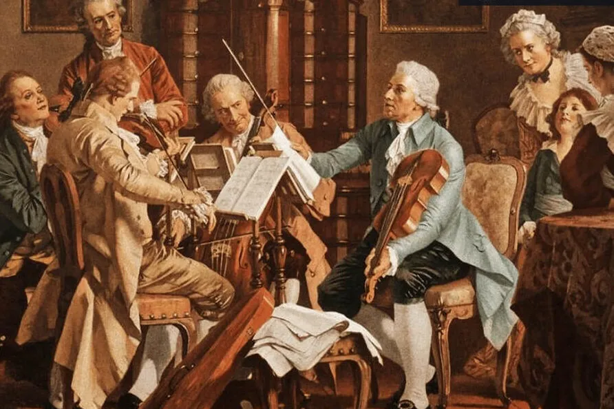
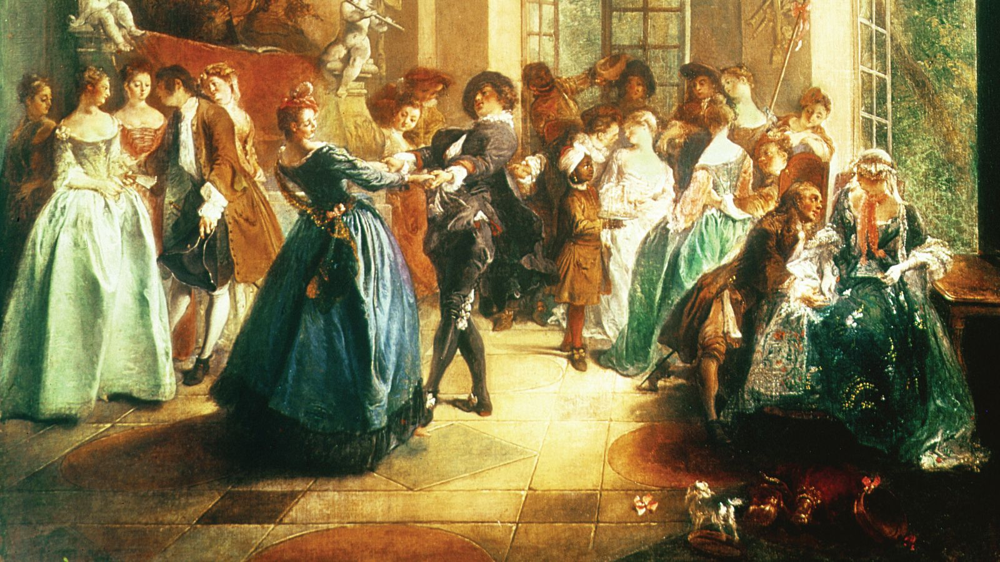
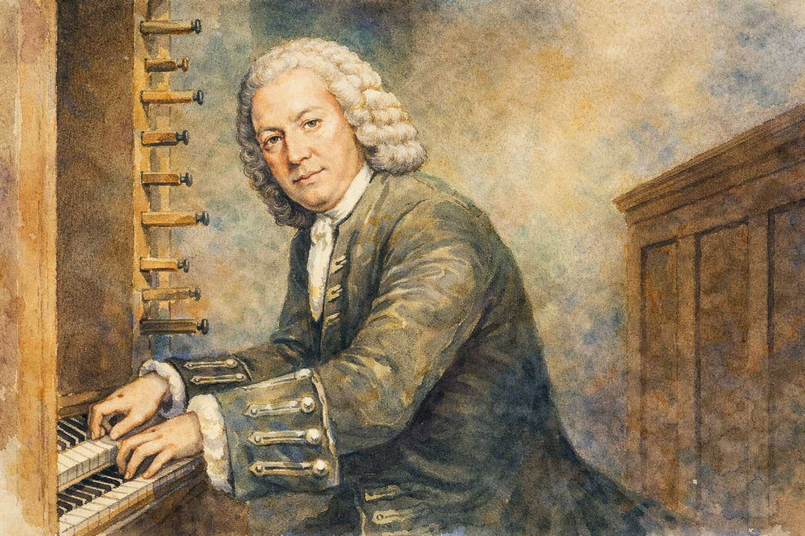

Instrumental music has gone its own way!
During the Baroque period, instrumental music achieved definitive independence from vocal music. Music was composed specifically for instruments (the refinement of which opened up many possibilities), giving rise to purely instrumental genres such as the concerto, the suite and the fugue.
The concerto
This word probably derives from the Italian term ‘concertare’, which could be translated as ‘to rival, to compete’. This makes sense, as this instrumental genre is based on a certain ‘rivalry’ between different groups of instruments. During the Baroque period, there were two variants of this genre:
| Concerto grosso | The musical rivalry or dialogue takes place between a small group of instruments, known as the concertino, and the rest of the orchestra, or tutti. Corelli and Handel were particularly notable in this genre. The concerto grosso would disappear by the end of the Baroque period, as the solo concerto came to dominate. |
| Concerto solo | A dialogue is established between a single instrument (sometimes two) and the orchestra. Torelli, Vivaldi and Bach were particularly notable in this regard. The solo concerto has continued to be performed right up to the present day. |

It is structured in three parts or movements that contrast in tempo:
| PART I: FAST | PARTE II: SLOW | PARTE III: FAST |
The suite
The other major instrumental genre of the Baroque period was the dance suite, or, in other words, a ‘sequence of dances’. The suite consists of several movements that contrast in character. The most common sequence of dances was allemande–courante–sarabande–giga.
- Allemande: of German origin, in duple metre and of moderate tempo. It has a serious, walking-like character.
- Courante: of French origin, in triple metre and fast in tempo. It is lively and features leaping movements.
- Sarabande: of Spanish (and Latin American) origin, with a triple metre and a very slow tempo. It is unhurried, solemn and majestic.
- Giga: of English/Irish origin, with a fast triple metre (a fast tempo subdivided into three) and a very fast tempo. It is cheerful, energetic and brings the suite to a close.

The fugue
It is a complex, polyphonic musical form based on imitation. It consists of a short melody (called the subject) which is first introduced in one voice and is then copied and pursued by the other voices throughout the entire piece, as in a game of musical hide-and-seek.

WE LISTEN AND WE DON'T JUDGE: CONCERTO - SUITE - FUGUE
Listening 7: Concerto
Vivaldi - Concert n.º 4 in Fm, Op. 8, RV 297, «L'inverno» I. Allegro non molto
- Is the concerto a solo piece or an ensemble piece?
- Why do we know it’s a concerto?
Listening 8: Suite
Haendel - Suite for harpsichord nº4 in Dm
- What is the tempo of this section of a suite?
- Given that it is in triple metre, which dance is it based on?
Listening 9: Fugue
Bach - Little fugue in G minor
- What is the texture of this piece?
- What do we call the first section that is heard at the beginning?
- How does that section develop throughout the piece?